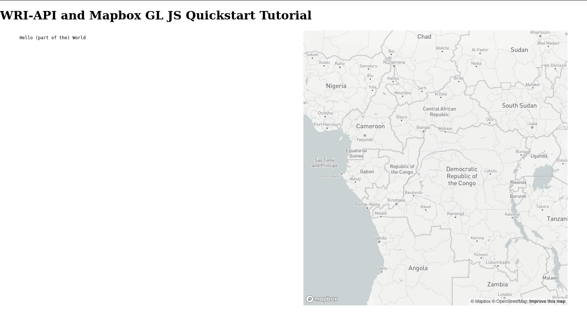
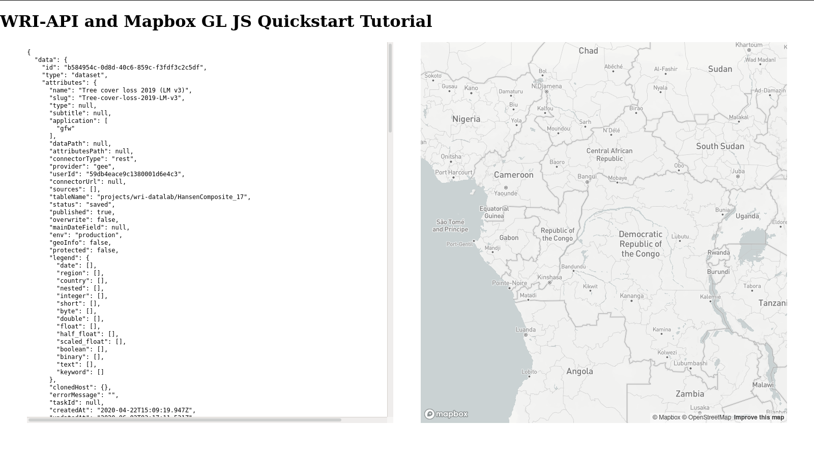

Resource Watch API Tutorials
This documentation hosts guided tutorials and how-to's for building products and analyes with the Resource Watch API and other technology.
Back to the documentation homepage
Mapbox Webmap Quickstart
Purpose
This is a quickstart tutorial for the API. It is intended for web developers who are evaluating or using the API. This tutorial does not provide best practices in respect to web development, but it does represent a quick demonstration that should be widely accessible.
One goal of this tutorial is to introduce some key concepts regarding how information is structured in API responses. While information in the API responses may be useful on its own, a key benefit is how well it integrates with other technologies including visualization libraries such as Vega and webmaps like Leaflet or those from Mapbox.
Mapbox GL JS is being used in this tutorial as the visualization outlet for the information returned by the API.
Over the course of this tutorial you will develop a simple web application that is capable of:
- interacting with the HTTP-based API to retrieve this information using the
/datasetendpoint. - displaying raster tiles in a webmap run by Mapbox GL JS
- showing metadata about the raster dataset being displayed
Pre-requirements
This tutorial will interact with the RW-API, but will not require any authentication since the interactions will be read-only from publicly visible datasets. You should be informed about the Resource Watch Terms of Service and API Attribution Requirements before using the API.
This tutorial requires a Mapbox Access Token with a token scope of styles:read to render the basemap.
If you are WRI staff it may be possible to obtain a token by contacting Ethan Roday.
Commercial vendors and outside organizations may need to provide their own accounts.
Individuals should consider signing up for a Mapbox account and learning what options they have.
This tutorial will also require the following applications:
- a text editor suitable for writing HTML/JS/CSS
- a modern web browser with Javascript enabled and developer tools familiarity
Background on Datasets, Queries, Layers
There are a variety of types of data that are integrated into the RW API, covering many topics, domains, and containing all the peculiar characteristics and conventions of the communities that produced these digital artifacts. The API is also fairly flexible towards accommodating the different needs between small data that may be the result of a limited case study and the big data of spatiotemporal data cubes or the unbounded potential of external API providers.
Let's quickly review some of the concepts used in the API before jumping into the tutorial. You can find deeper and more tailored information in the concepts documentation.
A Dataset essentially describes where information is being held.
Datasets are exposed through the /dataset/<id> endpoint as a JSON response.
This JSON has a flexible schema which can be inferred based on two required properties:
- the first,
connectorType, which describes the access pattern to the informationconnectorType: documentif taking from the "internal" database of uploaded filesconnectorType: restif performing external API calls to HTTP endpointsconnectorType: wmsif performing external Web Mapping Service calls
- the second,
provider, for which there are constrained possibilities based on theconnectorType- e.g.
csv,jsonare uploadeddocuments in the "internal" database - e.g.
cartodbandgeeare externalrestful APIs
- e.g.
The full table mapping providers to connectorTypes is located in the main API documentation.
Based on these two properties, the Dataset JSON object will contain many other top-level properties that collectively provide all that is needed to declare where the real data is being held and how to access it.
The /query API endpoint utilizes all this information about the Dataset behind the scenes to expose the real data without the developer needing to perform the speciality interfacing with all the providers that might be supplying data for a particular project or webpage.
Queries are supportive of some analytical functionality including filtering and aggregating.
Thoughtfully-prepared datasets, carefully crafted queries, and the routing of logic through the API can get you quite far towards capable applications.
Somewhat orthogonal to the concepts of Datasets and Queries is the concept of a Layer. A Layer is specialized information about how a Dataset/Query can be represented for a particular application, notably how it can be visualized and represented geospatially. Layer information is highly free-form and purpose-defined for a specific application or integration.
As a very concrete example, consider:
- There is a Dataset describing the latitude, longitude, depth, and magnitude of earthquakes events globally over the past month.
- A particular query is performed and filters the earthquake events to only those occurring within some distance of South America in the past week.
- This query is still returning information in the same structural form as the original global & monthly scope - let's say a table of comma-delimited text.
- A Layer may be created that:
- references how to perform the query above (full URL of query call)
- has a title called "Weekly View of South American Earthquakes"
- includes a configuration description for how a webmap could:
- visualize the earthquake events as circles located at the latitude and longitude fields
- scale the circles in size based on their magnitude field
- tint the circles in color from dark-blue to light-blue based on the depth field
- To display this webmap, a webpage needs to:
- call the
/layerendpoint - call the referenced
/queryendpoint to get the data - pass the query response data and the webmap configuration from the Layer into the webmap library
- call the
With the flexible Layer definitions, all configuration can be saved server-side, so the front-end work only requires linking the API responses to the technologies that implement the complex features.
The scope of the current tutorial will not cover the /query endpoint, but such content will be made available in the future.
Software specification
The specification for the webapp is:
(A) Display a large, interactive, Mapbox GL JS map
(B) Display some metadata/description for some data next to the map
(C) Show the raster tile layer for this data on the map
(D) Utilize the RW API to obtain the information needed for (B), (C)
Initial document structure
A basic "Hello World" setup for getting Mapbox GL JS online is given below. This will ensure your Mapbox token is working and there is a basic foundation for the webpage.
Each section in this tutorial has a corresponding "finished" version available on GitHub, which may be helpful if errors are encountered along the way.
This tutorial will have a single HTML file across all steps, but the associated javascript file (tutorial-index.js) will be changing at each step.
Copy the below text into a file called index.html inside a directory for this tutorial.
It will be assumed this file is called index.html throughout the tutorial, but there is no strict requirement for this.
<!DOCTYPE html>
<html>
<head>
<meta charset="utf-8" />
<meta name="viewport" content="initial-scale=1,maximum-scale=1,user-scalable=no" />
<title>WRI API Map</title>
<!-- Mapbox GL JS includes -->
<script src="https://api.mapbox.com/mapbox-gl-js/v1.11.0/mapbox-gl.js"></script>
<link href="https://api.mapbox.com/mapbox-gl-js/v1.11.0/mapbox-gl.css" rel="stylesheet" />
<!-- CSS embedded in head tag since this is a small app -->
<style>
/* basic reset of styling */
body {
margin: 0;
padding: 0;
}
#metadata-container {
overflow-y: auto;
}
/* Container holding the grid */
#grid-top-level {
display: grid;
grid-template-columns: 45% 45%; /* column widths */
grid-auto-rows: minmax(400px, 750px); /* row heights */
justify-content: space-evenly;
}
#map-container {
width: 100%;
}
</style>
</head>
<body>
<h1>WRI-API and Mapbox GL JS Quickstart Tutorial</h1>
<!-- Container holding the grid -->
<div id="grid-top-level">
<!-- Container (grid cell) for metadata panel -->
<div id="metadata-container">
<!-- Element actually holding the metadata text-->
<pre id="metadata">
Hello (part of the) World
</pre>
</div>
<!-- Container (grid cell) for interactive map -->
<div id="map"></div>
</div>
<script src="tutorial-index.js"></script>
</body>
</html>
This file establishes the following properties to the document:
- in
<body>, establish a top-level container, and two children containersmetadata-containerandmap - in
<head><style>, set a CSS grid layout on the top-level container, making the children align to a grid that is two columns wide - in
<head><style>, establish grid row dimensions, including a minimum and maximum height, letting metadata content overflow via a vertical scroll bar - in
<head>, fetch the Mapbox JS and CSS assets
You should also see that a local script is imported in <body>.
Copy the following into a file called tutorial-index.js next to the HTML file you established above.
// TO MAKE THE MAP APPEAR YOU MUST ADD YOUR ACCESS TOKEN FROM
// https://account.mapbox.com
mapboxgl.accessToken = 'YOUR KEY HERE -- PROBABLY STARTS WITH pk.****';
// initiate a new map by passing an object describing a config
// for more info see: https://docs.mapbox.com/mapbox-gl-js/api/map/
var map = new mapboxgl.Map({
// id of div that will hold map
container: 'map',
// one of the existing mapbox map styles
style: 'mapbox://styles/mapbox/light-v10',
// zoom in (greater = smaller area displayed)
zoom: 4,
// longitude, latitude of the map center
center: [20, 0]
});
This script initializes an interactive web map on the <div id="map"> element.
Upon replacing mapboxgl.accessToken with your access token, this file should be saved and the HTML opened in a web browser.
You should see a webpage that looks something like this:

If you are not seeing a map check the web developer console.
Getting dataset metadata
In this section the API will be used to obtain some structured information about a dataset. In the immediate, this information will be displayed on the left side of the webpage in the metadata pane. Later some of the information will be extracted and used in combination with the webmap.
The remaining work in this tutorial will use the following Dataset ID, which describes a dataset of tree cover loss (TCL).
datasetId = 'b584954c-0d8d-40c6-859c-f3fdf3c2c5df';
Datasets are accessed through the /dataset/<id> endpoint.
As described earlier in the background information a Dataset holds information about where "real data" is being held.
To obtain how to style the information and put it on a webmap requires accessing a Layer.
Here we will be taking advantage of the ability to expand the API response by using the ?includes= URL parameter, which will simultaneously return associatiated Layers, Metadata, or Widgets as specified.
In this web application we are making a call to the following URL:
https://api.resourcewatch.org/v1/dataset/b584954c-0d8d-40c6-859c-f3fdf3c2c5df/?includes=layer,metadata
You may want to copy that URL into your own browser window or use curl, wget, or similar to evaluate the response before proceeding to implementing this for the webpage.
The response looks something like this:
{
"data": {
"id": "b584954c-0d8d-40c6-859c-f3fdf3c2c5df",
"type": "dataset",
"attributes": {
"name": "Tree cover loss 2019 (LM v3)",
// ...
"connectorType": "rest",
"provider": "gee",
// ...
"layer": [
{
"id": "49a80e70-ec52-4ef8-bcc6-fb2771d95b2c",
"type": "layer",
"attributes": {
"name": "Tree cover loss - 2001-2019",
"slug": "Tree-cover-loss-2001-2019",
"dataset": "b584954c-0d8d-40c6-859c-f3fdf3c2c5df",
"description": "Tree Cover Loss",
// ...
"provider": "tilelayer",
// ...
There is much to investigate in this response, but you can see that there is both Dataset- and Layer-relevant content.
Not appending the ?includes=layer,metadata parameter will result in a comparatively smaller response, take a look!
Now let's implement this for the webpage and get the response on screen.
In a real development scenario smaller pieces of the response would probably be extracted and rendered into individual HTML elements.
For now we are going to just dump the response into a <pre> element to view it all.
Modify tutorial-index.js to the following complete script:
// TO MAKE THE MAP APPEAR YOU MUST ADD YOUR ACCESS TOKEN FROM
// https://account.mapbox.com
mapboxgl.accessToken = 'YOUR KEY HERE -- PROBABLY STARTS WITH pk.****';
// declare an async function that calls an API endpoint for dataset metadata
// takes one parameter
// (uuid) the Dataset ID
// returns an object interpreted from the JSON response
const callApiDatasetMetadata = async (uuid) => {
// fetch the API endpoint (GET request)
const response = await fetch('https://api.resourcewatch.org/v1/dataset/' + uuid + '?includes=layer,metadata')
if (!response.ok) {
throw new Error(`HTTP error! status: ${response.status}`);
}
return response.json();
}
// initiate a new map by passing an object describing a config
// for more info see: https://docs.mapbox.com/mapbox-gl-js/api/map/
var map = new mapboxgl.Map({
// id of div that will hold map
container: 'map',
// one of the existing mapbox map styles
style: 'mapbox://styles/mapbox/light-v10',
// zoom in (greater = smaller area displayed)
zoom: 4,
// longitude, latitude of the map center
center: [20, 0]
});
// run the API call once the map is loaded (API call is asnyc)
map.on('load', async () => {
// declare the Dataset ID
const datasetId = 'b584954c-0d8d-40c6-859c-f3fdf3c2c5df';
// fetch remote dataset metadata
const metadata = await callApiDatasetMetadata(datasetId);
// display the response metadata
document.getElementById('metadata').textContent = JSON.stringify(metadata, null, 2);
});
The changes above did the following:
- register a callback function that will be executed once the map is intially loaded
- supply a hard-coded
datasetId, a string reference to a known Dataset, in this callback - declare
callApiDatasetMetadata(datasetId)as a function to get an API response - call
callApiDatasetMetadataon map load, and set the metadata panel content based on this response
Reload in the browser to see the updated metadata panel, which should look like:

For the next step, some of the dataset information will be extracted and utilized. You already know the part of the response with the Layer content describes how this data can be used or rendered by applications. See if you can gain any intuition into what type of information is held in the Layer specifications for this particular Dataset.
Adding raster tiles to the map
In this section raster tiles will be added to the map. The API response that was previously retrieved will serve as the source of the tile layer URL.
Mapbox expects a raster tile layer to be supplied as a URL in the form https://example.com/path/to/pngdir/{x}/{y}/{z}.
The URL representation describes a set of square images located at cartesian positions (x, y) on a grid determined by a set of zoom levels (z).
This URL is expressed with templating semantics which are fairly ubiquitous across web map and tile-serving applications, but Mapbox specifically requires the TileJSON specification when working with tile sources.
The API response obtained earlier contains a reference to a tile layer and a URL, which for your own benefit should be found within the metadata by skimming the contents. If you are unable to find it, look within the following hierarchy address:
.data.attributes.layer[0].attributes.layerConfig.source.tiles[0]
Datasets and Layers accessed through the API are not guaranteed to have the same structuring of their layerConfig object, which means there may be a need to investigate each dataset in a more comprehensive way than is being demonstrated here.
Since this is a tutorial, some of this logic is going to be hardcoded for now.
For the given dataset, you will see a tile layer URL that looks like:
https://tiles.globalforestwatch.org/umd_tree_cover_loss/v1.7/tcd_{thresh}/{z}/{x}/{y}.png
This URL is close to what is needed by Mapbox, but there is a templated component {thresh} which will not be suitable for Mapbox to consume.
In this case, URL is templated beyond what is expected by the application and may be troublesome.
By browsing the layer object in the API response it is possible to find some additional attributes for how the layer parameters are configured.
For this specific case, there is a parameterization array at the address
.data.attributes.layer[0].attributes.layerConfig.params_config
That parameterization array looks like:
...
"params_config": [
{
"default": 30,
"key": "thresh",
"required": true
}
],
...
By using this parameterization data, the URL can be transformed into compliance with Mapbox GL.
Update the javascript file with the following three functions and a new version of the map.on('load') callback.
A description is located after this code block.
// ...
// const callApiDatasetMetadata = async (uuid) => {
// ...
// declare a function that returns the Mapbox-ready raster tile URL template
// (example.com/{x}/{y}/{z}) from the response object returned by `callApiDatasetMetadata`
// takes one parameter
// (obj) the API response data
// returns a string representing a templated URL, ready to be used by webmaps
const getTileLayerUrlForTreeCoverLoss = (obj) => {
// drill down to get a useful object
const layerConfig = obj['data']['attributes']['layer'][0]['attributes']['layerConfig'];
// get the URL template parameters
const defaultParams = layerConfig['params_config'];
// get the full templated URL
let url = layerConfig['source']['tiles'][0];
// substitute default parameters iteratively
for (const param of defaultParams) {
url = url.replace('{' + param['key'] + '}', param['default'].toString());
}
return url;
}
// declare a funciton that can get a simple identifier for a layer
// takes one parameter
// (obj) the API response data from `callApiDatasetMetadata`
// returns a string
const getLayerSlug = (obj) => {
return obj['data']['attributes']['layer'][0]['attributes']['slug'];
}
// declare a function that can add a raster tile layer to a Mapbox map
// takes three parameters:
// (mapVar) the Mapbox map object
// (title) a string identifier for the source and layer
// (url) the raster tile URL to add to the map
const addTileLayerToMap = (mapVar, title, url) => {
// need to first add a source
mapVar.addSource(title, {
'type': 'raster',
'tiles': [
url
],
'tilesize': 256
});
// then add the layer, referencing the source
mapVar.addLayer({
'id': title,
'type': 'raster',
'source': title,
'paint': {
'raster-opacity': 1 // let mapbox baselayer peak through
}
});
}
// ...
// var map = new mapboxgl.Map({
// ...
// run the API call once the map is loaded (API call is asnyc)
map.on('load', async () => {
// declare the Dataset ID
const datasetId = 'b584954c-0d8d-40c6-859c-f3fdf3c2c5df';
// fetch remote dataset metadata
const metadata = await callApiDatasetMetadata(datasetId);
// display the response metadata
document.getElementById('metadata').textContent = JSON.stringify(metadata, null, 2);
// get an identifier
const slug = getLayerSlug(metadata);
// get the tile layer URL from full API response data
const tileLayerUrl = getTileLayerUrlForTreeCoverLoss(metadata);
// add a layer to the map
addTileLayerToMap(map, slug, tileLayerUrl);
});
The changes above did the following:
- add a function
getTileLayerUrlForTreeCoverLossto obtain a well-formed tile URL - add a function
getLayerSlugto obtain a short identifier the tile layer of interest - add a function
addTileLayerToMapto handle the two-part source and layer definition process - update the
map.on('load')callback with more steps executed after the initial API call
Once again reload the browser and see the tile layer now on the map.

Next Steps
At this point the tutorial can be considered complete - the software specification is being met and hopefully enough of the concepts have been introduced to develop a general image of integrating API-retrieved information into a simple webapp.
While this tutorial utilized hand-written HTML, JS, CSS, transforming the logic into other frameworks such as React should be relatively simple if there is already familiarity in that space. Some wrappers and React components for working with Mapbox GL JS already exist, including react-map-gl and Vizzuality/layer-manager.
Geometry Analysis
Purpose
This tutorial intends to demonstrate a realistic example of how the /query API endpoint is used within a web application.
The /query endpoint is used to access actual data points, get real numeric values for a subset of the full data, or interact with the proxied database.
Queries extract information from the database and are how you get to the real data.
Queries are not how you get metadata about layers or datasets.
The calls to /query in this example will be refined with SQL statements like SELECT <columns> WHERE <conditions> that filter and transform the full dataset to only what is needed for the specific task.
The example will utilize three sources of information, reflecting the distributed nature of how information and derivative datasets are owned, stored, and transformed by different entities.
Here:
- Tree Cover Loss originates from University of Maryland, but the raster tiles are prepared and hosted by WRI. This is the same dataset that was used in the earlier quickstart tutorial, so there should already be some familiarity with these raster tiles.
- a vector dataset of protected areas (think parks, reserves, etc) is created by a the UN Environment Programme World Conservation Monitoring Centre , but working with those detailed polygon geometries is a challenge - they are simply too large for many purposes; precomputed vector tiles are used instead, and these were created and hosted by WRI to fit our web needs.
- a hosted database table that links polygon geometries to tree-cover loss; this analysis is computationally intensive and for historical records unlikely to change frequently. Think of this as connecting to part of an OLAP system.
Over the course of this tutorial you will develop a simple web application that is capable of:
- interacting with the HTTP-based API to retrieve metadata and catalog information using the
/datasetendpoint. - displaying raster and vector tiles in a webmap run by Mapbox GL JS
- dynamically querying a hosted database with the
/queryendpoint
Pre-requirements
This tutorial will interact with the RW-API, but will not require any authentication since the interactions will be read-only from publicly visible datasets. You should be informed about the Resource Watch Terms of Service and API Attribution Requirements before using the API.
This tutorial requires a Mapbox Access Token with a token scope of styles:read to render the basemap.
It is also advised to review the quickstart tutorial, which introduces some of the topics relevant to using the API.
Software specification
The specification for the webapp is:
(A) Display a large, interactive, Mapbox GL JS map
(B) Display a raster layer of Tree Cover Loss (TCL)
(C) Display a vector geometry layer of Protected Places (WDPA)
(D) Use the /query API endpoint to perform a dynamic data lookup for each WDPA geometry
Initial document structure
A basic "Hello World" setup for getting Mapbox GL JS online is given below. This will ensure your Mapbox token is working and there is a basic foundation for the webpage. This material is covered in the quickstart tutorial, but have a look over the script to jog your memory - some function names have changed, but most should be familiar.
Each section in this tutorial has a corresponding "finished" version available on GitHub, which may be helpful if errors are encountered along the way.
This tutorial will have a single HTML file across all steps, but the associated javascript file (tutorial-index.js) will be changing at each step.
Copy the below text into a file called index.html inside a directory for this tutorial.
<!DOCTYPE html>
<html>
<head>
<meta charset="utf-8" />
<meta name="viewport" content="initial-scale=1,maximum-scale=1,user-scalable=no" />
<title>WRI API Geometry Analysis</title>
<!-- Mapbox GL JS includes -->
<script src="https://api.mapbox.com/mapbox-gl-js/v1.11.0/mapbox-gl.js"></script>
<link href="https://api.mapbox.com/mapbox-gl-js/v1.11.0/mapbox-gl.css" rel="stylesheet" />
<!-- CSS embedded in head tag since this is a small app -->
<style>
/* basic reset of styling */
body { margin: 0; padding: 0; }
#map-container {
width: 100%;
height: 90%;
position: absolute;
}
#map {
width: 100%;
height: 100%;
}
</style>
</head>
<body>
<h1>WRI-API Geometry Analysis Tutorial</h1>
<!-- Container (grid cell) for interactive map -->
<div id="map-container">
<div id="map"></div>
</div>
<script src="tutorial-index.js"></script>
</body>
</html>
This will establish a single top-level container called map-container and one child called map.
Next to index.html create a file called tutorial-index.js, and copy the following script.
Change your Mapbox access token.
// TO MAKE THE MAP APPEAR YOU MUST ADD YOUR ACCESS TOKEN FROM // https://account.mapbox.com
mapboxgl.accessToken = 'YOUR KEY HERE -- PROBABLY STARTS WITH pk.****';
// declare an async function that calls an API endpoint for dataset metadata
// takes one parameter
// (uuid) the Dataset ID
// returns an object interpreted from the JSON response
const callApiDatasetMetadata = async (uuid) => {
// fetch the API endpoint (GET request)
const response = await fetch('https://api.resourcewatch.org/v1/dataset/' + uuid + '?includes=layer,metadata')
if (!response.ok) {
throw new Error(`HTTP error! status: ${response.status}`);
}
return response.json();
}
// declare a function that returns the Mapbox-ready raster tile URL template
// (example.com/{x}/{y}/{z}) from the response object returned by `callApiDatasetMetadata`
// takes one parameter
// (obj) the API response data
// returns a string representing a templated URL, ready to be used by webmaps
const getTileLayerUrlForTreeCoverLoss = (obj) => {
// drill down to get a useful object
const layerConfig = obj['data']['attributes']['layer'][0]['attributes']['layerConfig'];
// get the URL template parameters
const defaultParams = layerConfig['params_config'];
// get the full templated URL
let url = layerConfig['source']['tiles'][0];
// substitute default parameters iteratively
for (const param of defaultParams) {
url = url.replace('{' + param['key'] + '}', param['default'].toString());
}
return url;
}
// declare a function that can get a simple identifier for a layer
// takes one parameter
// (obj) the API response data from `callApiDatasetMetadata`
// returns a string
const getTreeCoverLossSlug = (obj) => {
return obj['data']['attributes']['layer'][0]['attributes']['slug'];
}
// declare a function that can add a raster tile layer to a Mapbox map
// takes three parameters:
// (mapVar) the Mapbox map object
// (title) a string identifier for the source and layer
// (url) the raster tile URL to add to the map
const addRasterTileLayerToMap = (mapVar, title, url) => {
// need to first add a source
mapVar.addSource(title, {
'type': 'raster',
'tiles': [
url
],
'tilesize': 256
});
// then add the layer, referencing the source
mapVar.addLayer({
'id': title,
'type': 'raster',
'source': title,
'paint': {
'raster-opacity': 0.8, // let mapbox baselayer peak through
'raster-hue-rotate': 180
}
});
}
// vvvvv MAIN SCRIPT ACTIVITY BELOW vvvvvv
// initiate a new map by passing an object describing a config
// for more info see: https://docs.mapbox.com/mapbox-gl-js/api/map/
var map = new mapboxgl.Map({
// id of div that will hold map
container: 'map',
// one of the existing mapbox map styles
style: 'mapbox://styles/mapbox/light-v10',
// zoom in (greater = smaller area displayed)
zoom: 4,
// longitude, latitude of the map center
center: [20, 0]
});
// add the data layers once the map is loaded (API calls are asnyc)
map.on('load', async () => {
// LOAD TREE COVER LOSS RASTER TILES
// declare the Dataset ID for Tree Cover Loss
const datasetIdForTCL = 'b584954c-0d8d-40c6-859c-f3fdf3c2c5df';
// fetch remote dataset metadata
const metadataForTCL = await callApiDatasetMetadata(datasetIdForTCL);
// get an identifier for the Tree Cover Loss raster tiles
const slugForTCL = getTreeCoverLossSlug(metadataForTCL);
// get the raster tile layer URL from full API response data
const tileLayerUrlForTCL = getTileLayerUrlForTreeCoverLoss(metadataForTCL);
// add the Tree Cover Loss raster layer to the map
addRasterTileLayerToMap(map, slugForTCL, tileLayerUrlForTCL);
});
Open index.html in a web browser and see a webpage that looks something like this:

If you are not seeing a map check the web developer console.
Vector tiles of protected areas
Next step is to add the polygons of protected areas, which warrants a short aside before adding it to the map.
This example is going to use the World Database on Protected Areas (WDPA), which contains GIS-ready data on areas protected as nature reserves, parks, natural areas, and other categories of preservation. The original dataset is large and full of finely traced park boundaries across the world - over 240-thousand polygons which in a compressed form is about 1.5 GB of data. This is much too large to transfer to users. When zoomed out to the continent or world view, the problem continues: excessive fine details and more polygons to display (or fetch remotely) at once. These type of problems have motivated the creation of vector tiles, which mirror raster tiles in intention and design, but have the distinctive properties associated with the vector data model.
Vector tiles are normally constructed as derivatives of an original dataset, with downsampled and simplified geometries created at different zoom levels, but maintaining feature attributes and properties. Like raster tiles, as you zoom in or out different tiles are fetched and rendered, reducing network burden by only pulling what is needed for the immediate view. Using some data assimilation methods built into the web map, the vector geometries can be stitched across different tiles to create seamless geometries. Vector tiles can have more than one layer, for example a street layer and a building layer, which helps reduce the need for lots of HTTP requests to render a complex map.
For WDPA, the dataset ID that will be used is:
a8360d91-06af-4f2d-bd61-4e50c8687ad8
Check out this dataset and metadata by making an API request to
https://api.resourcewatch.org/v1/dataset/a8360d91-06af-4f2d-bd61-4e50c8687ad8?includes=layer,metadata
You can also use the developer console on the active webpage to do this through the function
callApiDatasetMetadata('a8360d91-06af-4f2d-bd61-4e50c8687ad8')
The data retrieved should look like:
{
"data": {
"id": "a8360d91-06af-4f2d-bd61-4e50c8687ad8",
"type": "dataset",
"attributes": {
"name": "Protected Areas Vector Tiles (LM v3)",
"slug": "Protected-Areas-Vector-Tiles-LM-v3",
//...
"layer": [
{
"id": "cd31fdff-3aa6-45fd-a36d-5a2079c20d5b",
"type": "layer",
"attributes": {
"name": "Protected Areas - 2019",
"slug": "Protected-areas-2019-Vector-Tiles",
"dataset": "a8360d91-06af-4f2d-bd61-4e50c8687ad8",
"description": "Legally protected areas by IUCN category. Updated monthly.",
"provider": "tilelayer",
//...
"layerConfig": {
//...
"source": {
"tiles": [
"https://tiles.globalforestwatch.org/wdpa_protected_areas/v201909/mvt/{z}/{x}/{y}"
],
"maxzoom": 9,
"minzooom": 3,
"type": "vector"
},
"type": "vector"
},
"legendConfig": {
//...
}
}
}
],
//...
}
}
}
Vector tiles typically are specified with a URL template structure such as http://path.to/tile/directory/{z}/{y}/{x} or similar.
Just like with the raster tile layer already on the map, you can drill into ['data']['attributes']['layer'][0]['attributes']['layerConfig']['source']['tiles'][0] to find this templated URL.
Fortunately for this URL there are no additional templated parameters that need to be replaced before it is ready to use (see the getTileLayerUrlForTreeCoverLoss function for such a case).
In the script additions presented below the entire source object is extracted, as it contains the necessary specifications for adding a vector tile layer in Mapbox.
Add the following functions to tutorial-index.js before the MAIN SCRIPT ACTIVITY comment.
// declare a function that returns the Mapbox-ready vector tile URL template
// (example.com/{x}/{y}/{z}) from the response object returned by `callApiDatasetMetadata`
// takes one parameter
// (obj) the API response data
// returns an object representing a vector source, ready to be used by map.addSource().
const getTileLayerSourceForWDPAGeometries = (obj) => {
// drill down to get a useful object
return obj['data']['attributes']['layer'][0]['attributes']['layerConfig']['source'];
}
// declare a function that can add a raster tile layer to a Mapbox map
// takes four parameters:
// (mapVar) the Mapbox map object
// (title) a string identifier for the source and layer
// (source) the vector tile source to add to the map
// (layer) layer name in the vector tile - any vector tile can hold many different layers
const addVectorTileLayerToMap = (mapVar, title, source, layer) => {
// need to first add a source
mapVar.addSource(title, source);
// then add the layer, referencing the source
mapVar.addLayer({
'id': title,
'type': 'fill',
'source': title,
'source-layer': layer,
'paint': {
'fill-opacity': 0.25,
'fill-color': '#A6CEE3'
}
});
}
Also modify the map.on('load') call to add this vector tile layer to the map.
map.on('load', async () => {
// LOAD TREE COVER LOSS RASTER TILES
// declare the Dataset ID for Tree Cover Loss
const datasetIdForTCL = 'b584954c-0d8d-40c6-859c-f3fdf3c2c5df';
// fetch remote dataset metadata
const metadataForTCL = await callApiDatasetMetadata(datasetIdForTCL);
// get an identifier for the Tree Cover Loss raster tiles
const slugForTCL = getTreeCoverLossSlug(metadataForTCL);
// get the raster tile layer URL from full API response data
const tileLayerUrlForTCL = getTileLayerUrlForTreeCoverLoss(metadataForTCL);
// add the Tree Cover Loss raster layer to the map
addRasterTileLayerToMap(map, slugForTCL, tileLayerUrlForTCL);
// LOAD WDPA GEOMETRIES VECTOR TILES
// declare the Dataset ID for WDPA Geometries
const datasetIdForWDPAGeometries = 'a8360d91-06af-4f2d-bd61-4e50c8687ad8';
// fetch remote dataset metadata
const metadataForWDPAGeometries = await callApiDatasetMetadata(datasetIdForWDPAGeometries);
// get the source information, including the vector tile URL, for WDPA Geometries
const sourceForWDPAGeometries = getTileLayerSourceForWDPAGeometries(metadataForWDPAGeometries);
// add the WDPA vector tile layer to the map
addVectorTileLayerToMap(map, 'wdpa-tile-cache', sourceForWDPAGeometries, 'wdpa_protected_areas_201909');
});
The additions here enable similar functionality as already exists for the raster tile layer. The dataset is fetched, partial information is extracted, and a small set of configuration parameters are specified to link the tool to the remote filestore.
In the execution of addVectorTileLayerToMap(map, title, source, layer) in the map.on('load') callback the last parameter layer is known ahead of time - this is not stored in the metadata and must be supplied by other means.
For a vector tile with only one layer, it is possible to inspect a *.mvt file with a text editor and look for likely layer names near the front of the file.
Utilities such as ogrinfo can also be employed to list layers, which is more direct than inspecting the binary file.
Here is the result of running hexdump wdpa_tmp.mvt -C -n 256, which in the right column shows an ASCII interpretation of the file.
After 8 bytes (...(x...) the layer name is declared (wdpa_protected_areas_201909), and following that are the names of the attributes/fields for that layer.
00000000 1a a9 ae 28 78 02 0a 1b 77 64 70 61 5f 70 72 6f |...(x...wdpa_pro|
00000010 74 65 63 74 65 64 5f 61 72 65 61 73 5f 32 30 31 |tected_areas_201|
00000020 39 30 39 28 80 20 1a 06 77 64 70 61 69 64 1a 08 |909(. ..wdpaid..|
00000030 77 64 70 61 5f 70 69 64 1a 06 70 61 5f 64 65 66 |wdpa_pid..pa_def|
00000040 1a 04 6e 61 6d 65 1a 09 6f 72 69 67 5f 6e 61 6d |..name..orig_nam|
00000050 65 1a 05 64 65 73 69 67 1a 09 64 65 73 69 67 5f |e..desig..desig_|
00000060 65 6e 67 1a 0a 64 65 73 69 67 5f 74 79 70 65 1a |eng..desig_type.|
00000070 08 69 75 63 6e 5f 63 61 74 1a 08 69 6e 74 5f 63 |.iucn_cat..int_c|
00000080 72 69 74 1a 06 6d 61 72 69 6e 65 1a 0a 72 65 70 |rit..marine..rep|
00000090 5f 6d 5f 61 72 65 61 1a 0a 67 69 73 5f 6d 5f 61 |_m_area..gis_m_a|
000000a0 72 65 61 1a 08 72 65 70 5f 61 72 65 61 1a 08 67 |rea..rep_area..g|
000000b0 69 73 5f 61 72 65 61 1a 07 6e 6f 5f 74 61 6b 65 |is_area..no_take|
000000c0 1a 0a 6e 6f 5f 74 6b 5f 61 72 65 61 1a 06 73 74 |..no_tk_area..st|
000000d0 61 74 75 73 1a 09 73 74 61 74 75 73 5f 79 72 1a |atus..status_yr.|
000000e0 08 67 6f 76 5f 74 79 70 65 1a 08 6f 77 6e 5f 74 |.gov_type..own_t|
000000f0 79 70 65 1a 09 6d 61 6e 67 5f 61 75 74 68 1a 09 |ype..mang_auth..
Here is the output of ogrinfo wdpa_tmp.mvt:
INFO: Open of `wdpa_tmp.mvt'
using driver `MVT' successful.
1: wdpa_protected_areas_201909 (Multi Polygon)
Reload in the browser to see the updated map, which should look like:

Pan around the map, zoom in and out, and watch the vector tiles load remotely or from the cache of already-seen tiles.
For the next step, interaction will be added to the polygons.
Currently if you click on a WDPA geometry nothing happens - it is as though these vectors are just painted on top of the raster tile.
From the above hexdump, and from not-listed-here information, it is known that the vector data has associated attributes, and we are going to display that.
In future steps this groundwork set us up to use some of that information for calls to the /query endpoint.
Accessing vector attributes
As mentioned in the above section, vector tiles hold both geometry and attributes associated with each feature. All features within the same vector tile layer will have the same set of attribute fields. In this section, some of these attribute fields will be used in a popup that is displayed whenever a user clicks on a polygon.
From the hexdump in the previous section, you can see the names of the fields associated with the wdpa_protected_areas_201909 layer, including wdpaid, name, desig, status_yr, and many more.
The full set of attributes is described in the WDPA User Manual, or the quick list without descriptions can be obtained easily with ogrinfo -so wdpa_tmp.mvt wdpa_protected_areas_201909:
Layer name: wdpa_protected_areas_201909
Geometry: Multi Polygon
Feature Count: 2737
Extent: (0.000000, 0.000000) - (4096.000000, 4096.000000)
Layer SRS WKT:
(unknown)
mvt_id: Integer64 (0.0)
wdpaid: Integer (0.0)
wdpa_pid: String (0.0)
pa_def: String (0.0)
name: String (0.0)
orig_name: String (0.0)
desig: String (0.0)
desig_eng: String (0.0)
desig_type: String (0.0)
iucn_cat: String (0.0)
int_crit: String (0.0)
marine: String (0.0)
rep_m_area: Real (0.0)
gis_m_area: Real (0.0)
rep_area: Real (0.0)
gis_area: Real (0.0)
no_take: String (0.0)
no_tk_area: Real (0.0)
status: String (0.0)
status_yr: Integer (0.0)
gov_type: String (0.0)
own_type: String (0.0)
mang_auth: String (0.0)
mang_plan: String (0.0)
verif: String (0.0)
metadataid: Integer (0.0)
sub_loc: String (0.0)
parent_iso: String (0.0)
iso3: String (0.0)
geostore_id: String (0.0)
To enable a popup with some of this information, add the following to the javascript file, above the start of the main script execution.
// declare a function that returns an HTML string to be displayed
// in the popup on a vector element.
// takes one parameter:
// (f) an element of the vector tile
const popupContentForWDPA = async (f) => {
// WDPA identifier string
const wdpaId = f.properties['wdpaid'];
// start assembling the string of HTML that will be displayed
// first make a hyperlink to a details page for this geometry (external site)
let content = '<span>name: ' +
'<a target="_blank" ' +
'href="https://protectedplanet.net/' + wdpaId + '" >' +
f.properties['name'] +
'</a></span>';
// add the identifier, since that is being used it should also be displayed
content += '<br><span>wdpaid: ' + wdpaId + '</span>';
return content;
}
and the following at the end of the file, after the map has been loaded.
// When a click event occurs on a feature in the WDPA vector layer,
// open a popup at the location of the click.
map.on('click', 'wdpa-tile-cache', async (e) => {
// get the features underneath the clicked point
const features = map.queryRenderedFeatures(e.point, {layers: ['wdpa-tile-cache']});
// create a popup at the clicked point
new mapboxgl.Popup()
.setLngLat(e.lngLat)
.setHTML(await popupContentForWDPA(features[0])) // use first feature if many selected
.addTo(map);
});
// Change the cursor to a pointer when the mouse is over the WDPA layer.
map.on('mouseenter', 'wdpa-tile-cache', function() {
map.getCanvas().style.cursor = 'pointer';
});
// Change it back to a pointer when it leaves.
map.on('mouseleave', 'wdpa-tile-cache', function() {
map.getCanvas().style.cursor = '';
});
The function popupContentForWDPA simply returns the HTML that will be used within the popup.
There are two entries in the HTML string:
- the
nameof the area, which is hyperlinked to this entry on the protectedplanet.net website using thewdpaidproperty to construct the URL. - the
wdpaid, a unique identifier for the protected area.
There is no necessity for this to be an async function currently, but in later steps async will be needed, so this is laying the groundwork.
The three calls at the end of the file exist to register functions with map events, importantly when a WDPA geometry is clicked, a popup will appear where the click occurred and display the two pieces of information described above.
In the next section the /query endpoint will be discussed.
Querying a table
For the current example, the WDPA vector geometries has no awareness of the tree cover loss values that are being displayed underneath them. There is no simple way to do spatial statistics on the raster tiles - as you should recall, the raster tiles are pre-rendered RGB versions of a much larger and complex dataset. The process for making the tiles is lossy - there is no way to recover the true values for tree cover loss from these rendered images. But we do, in fact, need to display tree cover loss values for the protected areas. Future tutorials will demonstrate on-the-fly analysis, but for now a more simple method will be employed.
Here we will use a pre-computed lookup table to connect WDPA geometries with tree cover loss metrics.
This table and its rows will be accessed through the /query endpoint using basic SQL functionality to query a table and extract useable information.
This section of the tutorial will introduce the basics of the /query endpoint, describe the table being queried, and demonstrate how real queries look.
Let's begin with looking at the /query endpoint reference.
You should read over the section for a comprehensive understanding.
Below is a condensed version with the critical bits.
The /query endpoint is used primarily in conjuction with the ?sql=... URL parameter, which defines the query to be performed using a basic subset of SQL.
All queries should be SELECTs, since they are reading the information and not updating the table.
In practice, queries are likely to have the traditional form of SELECT .... FROM .... WHERE .....
The query construction will impact the structure of the returned information - you can get a single value, a list of values, or something looking like a table depending on what you request.
The response is by default a JSON-deserializable string, but with the ?format={json|csv} parameter that can be changed.
The dataset ID for pre-computed tree cover loss within WDPA geometries is given below. This will be used throughout this section and the next section, where the queries will be included in the web application. For this section the queries will be made through the terminal or with the URL bar in your web browser.
lookupTableId = 'a4d92f66-83f4-40f9-9d70-17297ef90e63';
Look at the Dataset by sending a GET request to:
http://api.resourcewatch.org/v1/dataset/a4d92f66-83f4-40f9-9d70-17297ef90e63
The legend object in the response holds information about the structure and schema of the table.
Look over the column names, organized by data type.
{
...
"legend": {
"date": [],
"region": [],
"country": [],
"nested": [],
"integer": [
"umd_tree_cover_loss__year",
"umd_tree_cover_density__threshold",
"ifl_intact_forest_landscape__year"
],
"short": [],
"byte": [],
"double": [
"umd_tree_cover_loss__ha",
"whrc_aboveground_biomass_loss__Mg",
"whrc_aboveground_co2_emissions__Mg"
],
"float": [],
"half_float": [],
"scaled_float": [],
"boolean": [],
"binary": [],
"text": [],
"keyword": [
"wdpa_protected_area__id",
"wdpa_protected_area__name",
"wdpa_protected_area__iucn_cat",
"wdpa_protected_area__iso",
"wdpa_protected_area__status",
"tsc_tree_cover_loss_drivers__type",
"esa_land_cover_2015__class",
"is__birdlife_alliance_for_zero_extinction_site",
"gfw_plantation__type",
"is__gmw_mangroves_1996",
"is__gmw_mangroves_2016",
"is__umd_regional_primary_forest_2001",
"is__gfw_tiger_landscape",
"is__landmark_land_right",
"is__gfw_land_right",
"is__birdlife_key_biodiversity_area",
"is__gfw_mining",
"is__peatland",
"is__gfw_oil_palm",
"is__idn_forest_moratorium",
"is__gfw_wood_fiber",
"is__gfw_resource_right",
"is__gfw_managed_forest"
]
},
...
}
Let's issue a basic query to get all fields (columns) for five rows, so we have an opportunity to look at the information in the table:
http://api.resourcewatch.org/v1/query/?sql=SELECT * FROM a4d92f66-83f4-40f9-9d70-17297ef90e63 LIMIT 5
The response should look something like:
{
"data": [
{
"wdpa_protected_area__id": 555531125,
"wdpa_protected_area__name": "Peniche / Stª Cruz",
"wdpa_protected_area__iucn_cat": "Not Reported",
"wdpa_protected_area__iso": "PRT",
"wdpa_protected_area__status": "Designated",
"umd_tree_cover_loss__year": 2019,
"umd_tree_cover_density__threshold": 10,
"tsc_tree_cover_loss_drivers__type": "Forestry",
"esa_land_cover_2015__class": "Settlement",
"is__birdlife_alliance_for_zero_extinction_site": false,
"gfw_plantation__type": 0,
"is__gmw_mangroves_1996": false,
"is__gmw_mangroves_2016": false,
"ifl_intact_forest_landscape__year": 0,
"is__umd_regional_primary_forest_2001": false,
"is__gfw_tiger_landscape": false,
"is__landmark_land_right": false,
"is__gfw_land_right": false,
"is__birdlife_key_biodiversity_area": false,
"is__gfw_mining": false,
"is__peatland": false,
"is__gfw_oil_palm": false,
"is__idn_forest_moratorium": false,
"is__gfw_wood_fiber": false,
"is__gfw_resource_right": false,
"is__gfw_managed_forest": false,
"umd_tree_cover_loss__ha": 0.2391284441558024,
"whrc_aboveground_biomass_loss__Mg": 14.228141162972282,
"whrc_aboveground_co2_emissions__Mg": 26.08492546544918,
"_id": "AXJhK02CBq2MwHEKuVTU"
},
...
],
...
}
Most of these fields are not needed for our current pursuit of associating tree cover loss with a WDPA geometry. Some are very useful for that purpose, however:
wdpa_protected_area__id: the identifier for a WDPA protected areaumd_tree_cover_loss__year: the year of a record (row)umd_tree_cover_density__threshold: the threshold of tree density for a record (row)umd_tree_cover_loss__ha: the amount of forest loss in hectares for a record (row)
We will use these in the future for the web application, but let's quickly try out another query that utilizes more of the SQL capabilities.
Let's say you want to get an aggregated value for tree cover loss over a certain country.
http://api.resourcewatch.org/v1/query/?sql=SELECT SUM(umd_tree_cover_loss__ha) AS total_loss FROM a4d92f66-83f4-40f9-9d70-17297ef90e63 WHERE wdpa_protected_area__iso='BRA' AND umd_tree_cover_loss__year=2015 AND umd_tree_cover_density__threshold=30
The return should look like:
{
"data": [
{
"total_loss": 266476.8886672246
}
],
...
}
This query used:
- the
SUMfunction to aggregate a numeric field (umd_tree_cover_loss__year) - the
ASassigner to give a meaningful label to output field - the
WHEREmodifier to construct a clause that filters the rows- the country must be Brasil (ISO code BRA)
- the year must be 2015
- the threshold for consideration is 30% tree cover loss
Try to define more queries and explore the data a bit before moving to the next section.
When aggregating values always remember to subselect in a meaningful way to get meaningful output values.
In the above query it is important to supply a threshold in the WHERE clause, otherwise there is the potential for double counting (or multi-counting) the same lost forest (50% threshold fully encompasses the values for the 30% threshold).
Dynamic queries at runtime
Now that we have experience with writing queries, let's integrate that into the web application.
Let's start with writing a function to do the querying. As a reminder of our intention, we are trying to get a measure of tree cover loss associated with a single WDPA geometry.
Add this function above the main script execution.
// declare an async function that calls an API endpoint for querying.
// this uses a pre-computed table that links WDPA identifiers to tree cover loss values.
// takes three parameters
// (wdpaId) integer; the WDPA geometry ID, which uniquely identifies a protected area
// (year) integer; the year of interest {2001 - 2019}
// (threshold) integer; the tree cover loss threshold {10, 15, 20, 25, 30, 50, 75}
// returns an object interpreted from the JSON response
const callApiQueryWDPATreeCoverLoss = async (wdpaId, year, threshold) => {
//construct the query
const queryDatasetId = 'a4d92f66-83f4-40f9-9d70-17297ef90e63';
const sqlQuery = 'https://api.resourcewatch.org/v1/query/' +
'?sql=SELECT SUM(umd_tree_cover_loss__ha) AS tcl_ha ' +
'FROM ' + queryDatasetId +
' WHERE wdpa_protected_area__id=' + wdpaId +
' AND umd_tree_cover_loss__year=' + year +
' AND umd_tree_cover_density__threshold=' + threshold;
// fetch the API endpoint (GET request)
const response = await fetch(sqlQuery)
if (!response.ok) {
throw new Error(`HTTP error! status: ${response.status}`);
}
// convert response to JS object
return response.json();
}
Reload the webpage and try this function with the developer console.
await callApiQueryWDPATreeCoverLoss(40811, 2019, 30);
Now let's extract this information and get it into the popup. In the below function you will see there are some additional metrics being inserted as well.
Delete the existing popupContentForWDPA function and replace it with the following:
// declare a function that returns a string to be displayed
// in the popup on a vector element.
// takes one parameter:
// (e) an element of the vector tile
const popupContentForWDPA = async (f) => {
// subtract marine area from total area and convert from square km to hectare
let landAreaHectare = (f.properties['rep_area'] - f.properties['rep_m_area']) * 100;
// WDPA identifier will be used to query the TCL data table
let wdpaId = f.properties['wdpaid'];
// get the Tree Cover Loss area, which is returned in units of hectare
let tclResponse = await callApiQueryWDPATreeCoverLoss(wdpaId, 2019, 30);
// start assembling the string of HTML that will be displayed
// first make a hyperlink to a details page for this geometry (external site)
let content = '<span>name: ' +
'<a target="_blank" ' +
'href="https://protectedplanet.net/' + wdpaId + '" >' +
f.properties['name'] +
'</a></span>';
// add the identifier, since that is being used it should also be displayed
content += '<br><span>wdpaid: ' + wdpaId + '</span>';
// add the land area, truncating to two digits past the decimal
content += '<br><span>land area (ha): ' + landAreaHectare.toFixed(2) + '</span>';
// add the TCL area, truncating to two digits past the decimal
content += '<br><span>2019 TCL area (ha): ' + tclResponse['data'][0]['tcl_ha'].toFixed(2) + '</span>';
return content;
}
With the popup now able to display the tree cover loss for each polygon, let's reload the webpage and try it out!

Next Steps
The /query endpoint is the method for getting the real data.
The use of SQL-like functionality enables basic types of filtering, subselection, and aggregation to produce usable information.
There are of course limitations and not all SQL functionality is available, notably the relational aspect that some may expect.
The /query endpoint does not support JOINs and has very limited support for nested queries or subqueries.
Future tutorials will discuss on-the-fly analyses, which will bypass the need for pre-computed tables. On-the-fly analysis allows for rasters to be queried and analyzed with vector geometries, including those that are drawn by the user or not known ahead of time.